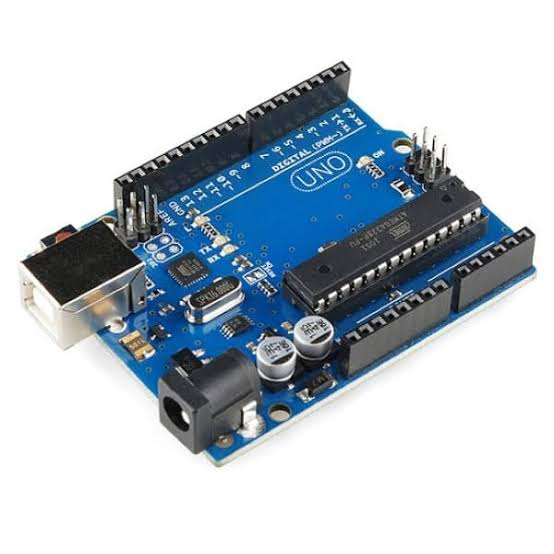

Entenda a tecnologia
Aprenda os fundamentos de eletrônica, sensores e programação na prática.
Descubra o universo do Arduino e veja como transformar curiosidade em experiências reais com tecnologia.
Arduino é uma plataforma de prototipagem eletrônica aberta e flexível. Com uma placa, componentes e algumas linhas de código, você pode criar projetos interativos, automações e dispositivos conectados.
Aprenda os fundamentos de eletrônica, sensores e programação na prática.
Combine componentes para construir soluções úteis, criativas e interativas.
Mostre o que você construiu e inspire outras pessoas a também colocar a mão na massa.
Conheça a placa e veja novas ideias em ação.

O Arduino Uno pode controlar LEDs, sensores, motores e muito mais.
Confira dicas para planejar, montar e finalizar suas ideias.